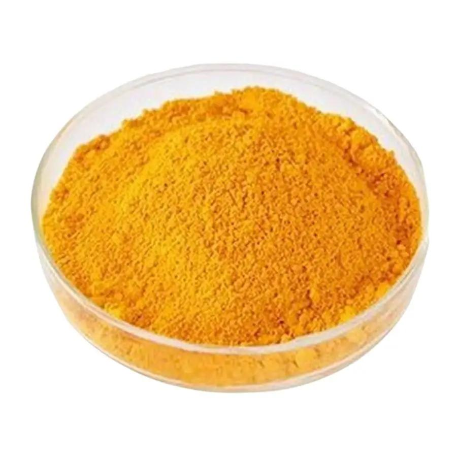

Tính chất:
\(\bullet\) Ở dạng tinh khiết, là chất rắn kết tinh có màu vàng đến màu vàng cam, ở dạng bột có màu cam đặt chưng.
\(\bullet\) Trong một số báo cáo, Riboflavin có thể có vị đắng nhẹ, không có mùi đáng kể, tuy vậy không khuyến nghị nếm thứ.
\(\bullet\) Vitaimin B2 là một chất kém tan, tan ít trong nước(nhiệt độ tăng có thể cải thiện độ tan đôi chút), kém tan trong các dung môi không phân cực như ether, cũng như không có dung môi hòa tan chuyên dụng, có thể tan rốt tất trong môi trường kiềm nhẹ(tuy vậy trong môi trường này vitamin B2 có thể bị phân hủy). Một sự thật khá hay, độ tan của chất có thể tăng lên khi có Nicotinamide(dạng amid của niacin hay acid nicotinic) và u-rê.
\(\bullet\) Khá bền với nhiệt, bắt đầu nóng chảy và phân hủy ở nhiệt độ từ 280-290\(^oC\).
\(\bullet\) Có khả năng huỳnh quang khi được kích thích bởi ánh sáng có bức sóng thích hợp, đặc biệt với tia UV, độ mạnh yếu phụ thuộc vào nồng độ, độ pH, bước sóng ánh sáng dùng để kích thích và điều kiện của các chất dập tắt hình quanh đều gây ảnh hưởng. Tuy vậy Ribloflavin khá nhạy với ánh sáng, việc chiếu sáng kéo dày hay cường độ mạnh có thể gây hiện tượng quang phân hoặc quang oxy hóa(làm thúc đẩy đáng kể quá trình oxy hóa) khiến cho chất bị biến tính, mất hoạt tính sinh học.
| Vitamin A |
|---|
|
 |